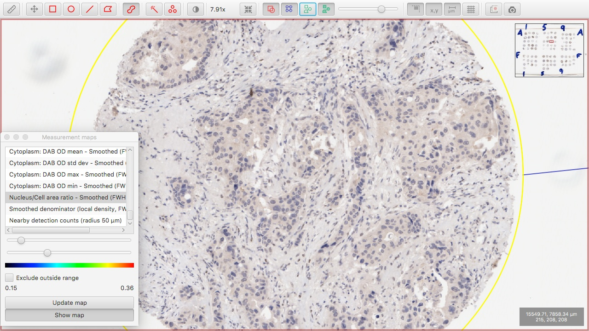
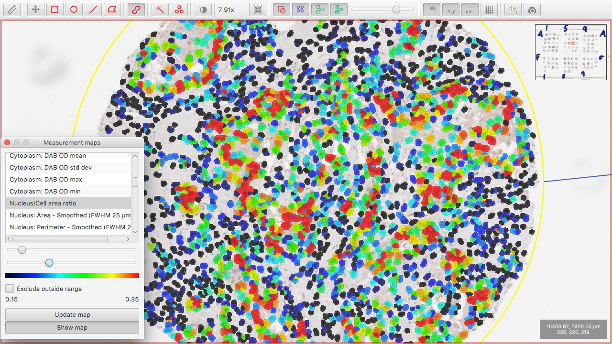
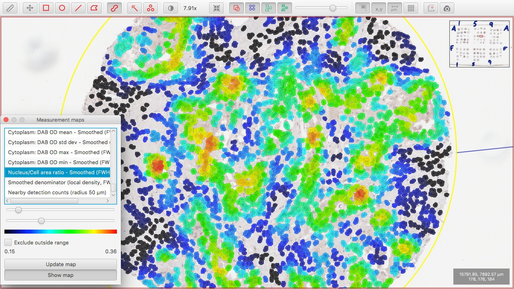
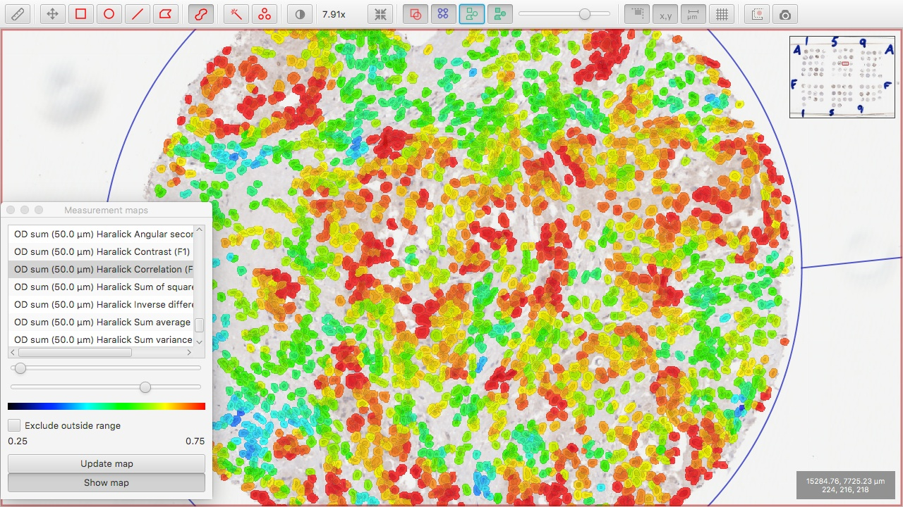
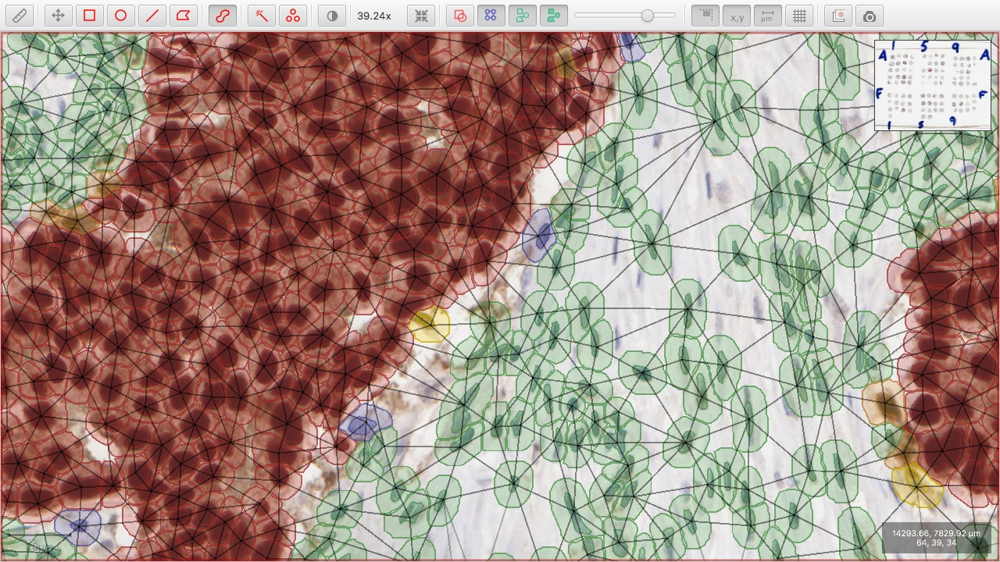

Cell detection also creates some basic measurements of shape and staining intensity for each individual cell,
which are useful for distinguishing between different populations of cells (here: classifying cells as tumor or non-tumor).
Additional features can be calculated and added to each cell to supplement this information
resulting in a more accurate classification.
Screenshots

Original image containing tumor and non-tumor cells.

Visualization of 'nuclear-to-cell area ratio' measurements for individual cells. Although this measurement is informative for distinguishing tumor from non-tumor cells, it is noisy.

Visualization of 'nuclear-to-cell area ratio' measurements, smoothed across neighboring cells. This reduces the noise of the raw measurement to make it more powreful in the correct identification of tumor and non-tumor regions.

Visualization of Haralick texture features.

Delaunay triangulation identifies neighboring cells, allowing the calculation of additional features based on cell clustering.